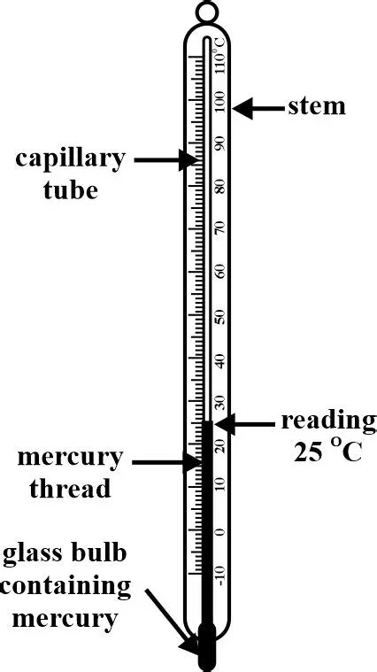

Capillary tubes are small, slender tubes with a narrow
internal diameter that play an essential role
in various scientific, industrial, and medical applications.

A bimetallic stemmed thermometer is a temperature-measuring
device that uses two different metals bonded together inside
a probe to detect heat.
Bead connector, color reflector, lyric dissector,
object creator. HgT creates small-batch wearable
goods. Built around familiar colors and pattern.
Mixed with subtle details meant for those who catch them.